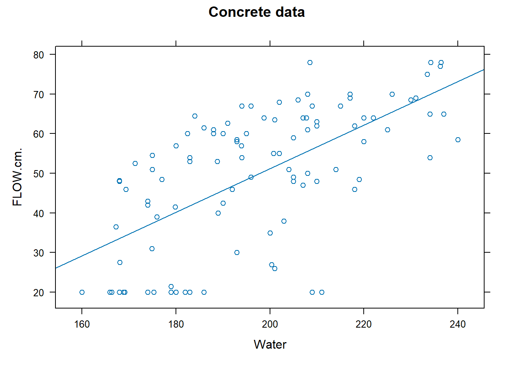
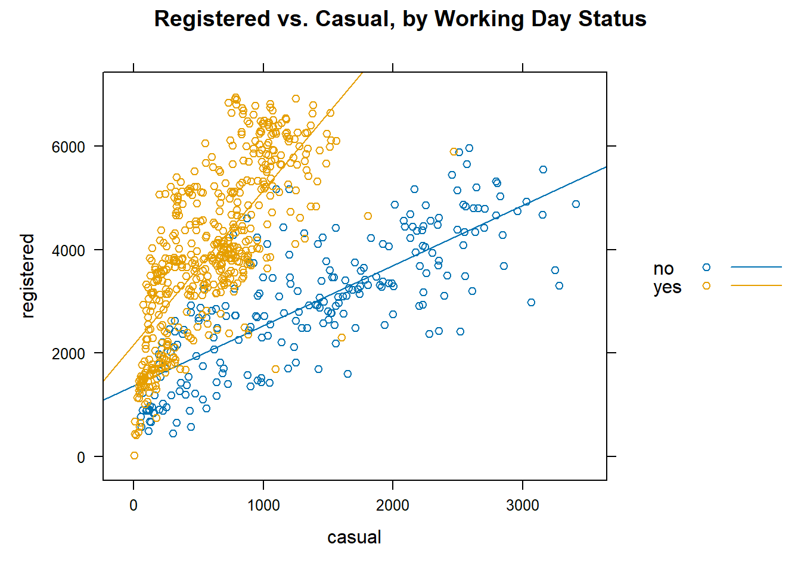
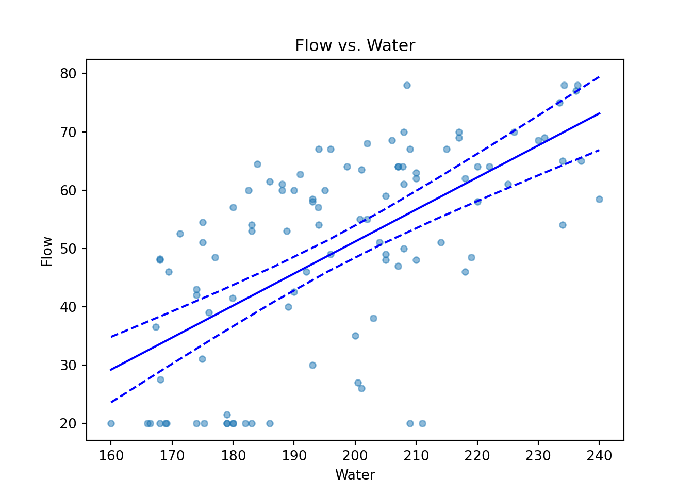

9 Linear Regression
9.1 Introduction
Regression analysis is a technique for investigating and modeling the relationship between variables like X and Y. Here are some examples:
- Within a country, we may wish to use per capita income (X) to estimate the life expectancy (Y) of residents.
- We may wish to use the size of a crab claw (X) to estimate the closing force that it can exert (Y).
- We may wish to use the height of a person (X) to estimate their weight (Y).
In all the above cases, we refer to \(X\) as the explanatory or independent variable. It is also sometimes referred to as a predictor. \(Y\) is referred to as the response or dependent variable. In this topic, we shall first introduce the case of simple linear regression, where we model the \(Y\) on a single \(X\). In later sections, we shall model the \(Y\) on multiple \(X\)’s. This latter technique is referred to as multiple linear regression.
Regression models are used for two primary purposes:
- To understand how certain explanatory variables affect the response variable. This aim is typically known as estimation, since the primary focus is on estimating the unknown parameters of the model.
- To predict the response variable for new values of the explanatory variables. This is referred to as prediction.
In our course, we shall focus on the estimation aim, since prediction models require a paradigm of their own, and are best learnt alongside a larger suite of models e.g. decision trees, support vector machines, etc.
In subsequent sections, we shall revisit a couple of datasets from earlier topics to run linear regression models on them.
Example 9.1 (Concrete Data: Flow on Water) Recall the concrete dataset that we first encountered in the topic on summarising data. We shall go on to fit a linear regression to understand the relationship between the output of the flow test, and the amount of water used to create the concrete.
It does appear that there is a trend in the scatter plot. We shall figure out how to estimate this line in this topic.
Example 9.2 (Bike Rental Data) In the introduction to SAS, we encountered data on bike rentals in the USA over a period of 2 years. Here, we shall attempt to model the number of registered users on the number of casual users.

Contingent on whether the day is a working one or not, it does appear that the trendline is different.
9.2 Simple Linear Regression
Formal Set-up
The simple linear regression model is applicable when we have observations \((X_i, Y_i)\) for \(n\) individuals. For now, let’s assume both the \(X\) and \(Y\) variables are quantitative.
The simple linear regression model is given by
\[ Y_i = \beta_0 + \beta_1 X_i + e_i \tag{9.1}\] where
- \(\beta_0\) is intercept term,
- \(\beta_1\) is the slope, and
- \(e_i\) is an error term, specific to each individual in the dataset.
\(\beta_0\) and \(\beta_1\) are unknown constants that need to be estimated from the data. There is an implicit assumption in the formulation of the model that there is a linear relationship between \(Y_i\) and \(X_i\). In terms of distributions, we assume that the \(e_i\) are i.i.d Normal.
\[ e_i \sim N(0, \sigma^2), \; i =1\ldots, n \tag{9.2}\]
The constant variance assumption is also referred to as homoscedascity (homo-skee-das-city). The validity of the above assumptions will have to be checked after the model is fitted. All in all, the assumptions imply that:
- \(E(Y_i | X_i) = \beta_0 + \beta_1 X_i\), for \(i=1, \ldots, n\).
- \(Var(Y_i | X_i) = Var(e_i) = \sigma^2\), for \(i=1, \ldots, n\).
- The \(Y_i\) are independent.
- The \(Y_i\)’s are Normally distributed.
Estimation
Before deploying or using the model, we need to estimate optimal values to use for the unknown \(\beta_0\) and \(\beta_1\). We shall introduce the method of Ordinary Least Squares (OLS) for the estimation. Let us define the error Sum of Squares to be
\[ SS_E = S(\beta_0, \beta_1) = \sum_{i=1}^n (Y_i - \beta_0 - \beta_1 X_i)^2 \tag{9.3}\]
Then the OLS estimates of \(\beta_0\) and \(\beta_1\) are given by \[ \mathop{\arg \min}_{\beta_0, \beta_1} \sum_{i=1}^n (Y_i - \beta_0 - \beta_1 X_i)^2 \] The minimisation above can be carried out analytically, by taking partial derivative with respect to the two parameters and setting them to 0.
\[\begin{eqnarray*} \frac{\partial S}{\partial \beta_0} &=& -2 \sum_{i=1}^n (Y_i - \beta_0 - \beta_1 X_i) = 0 \\ \frac{\partial S}{\partial \beta_1} &=& -2 \sum_{i=1}^n X_i (Y_i - \beta_0 - \beta_1 X_i) = 0 \end{eqnarray*}\]
Solving and simplifying, we arrive at the following: \[\begin{eqnarray*} \hat{\beta_1} &=& \frac{\sum_{i=1}^n (X_i - \bar{X})(Y_i - \bar{Y})}{\sum_{i=1}^n (X_i - \bar{X})^2} \\ \hat{\beta_0} &=& \bar{Y} - \hat{\beta_0} \bar{X} \end{eqnarray*}\] where \(\bar{Y} = (1/n)\sum Y_i\) and \(\bar{X} = (1/n)\sum X_i\).
If we define the following sums: \[\begin{eqnarray*} S_{XY} &=& \sum_{i=1}^n X_i Y_i - \frac{(\sum_{i=1}^n X_i )(\sum_{i=1}^n Y_i )}{n} \\ S_{XX} &=& \sum_{i=1}^n X_i^2 - \frac{(\sum_{i=1}^n X_i )^2}{n} \end{eqnarray*}\] then a form convenient for computation of \(\hat{\beta_1}\) is \[ \hat{\beta_1} = \frac{S_{XY}}{S_{XX}} \]
Once we have the estimates, we can use Equation 9.1 to compute fitted values for each observation, corresponding to our best guess of the mean of the distributions from which the observations arose: \[ \hat{Y_i} = \hat{\beta_0} + \hat{\beta_1} X_i, \quad i = 1, \ldots, n \] As always, we can form residuals as the deviations from fitted values. \[ r_i = Y_i - \hat{Y}_i \tag{9.4}\] Residuals are our best guess at the unobserved error terms \(e_i\). Squaring the residuals and summing over all observations, we can arrive at the following decomposition, which is very similar to the one in the ANOVA model:
\[ \underbrace{\sum_{i=1}^n (Y_i - \bar{Y})^2}_{SS_T} = \underbrace{\sum_{i=1}^n (Y_i - \hat{Y_i})^2}_{SS_{Res}} + \underbrace{\sum_{i=1}^n (\hat{Y_i} - \bar{Y})^2}_{SS_{Reg}} \]
where
- \(SS_T\) is known as the total sum of squares.
- \(SS_{Res}\) is known as the residual sum of squares.
- \(SS_{Reg}\) is known as the regression sum of squares.
In our model, recall from Equation 9.2 that we had assumed equal variance for all our observations. We can estimate \(\sigma^2\) with \[ \hat{\sigma^2} = \frac{SS_{Res}}{n-2} \] Our distributional assumptions lead to the following for our estimates \(\hat{\beta_0}\) and \(\hat{\beta_1}\):
\[\begin{eqnarray} \hat{\beta_0} &\sim& N(\beta_0,\; \sigma^2(1/n + \bar{X}^2/S_{XX})) \\ \hat{\beta_1} &\sim& N(\beta_1,\; \sigma^2/S_{XX}) \end{eqnarray}\]
The above are used to construct confidence intervals for \(\beta_0\) and \(\beta_1\), based on \(t\)-distributions.
9.3 Hypothesis Test for Model Significance
The first test that we introduce here is to test if the coefficient \(\beta_1\) is significantly different from 0. It is essentially a test of whether it was worthwhile to use a regression model of the form in Equation 9.1, instead of a simple mean to represent the data.
The null and alternative hypotheses are:
\[\begin{eqnarray*} H_0 &:& \beta_1 = 0\\ H_1 &:& \beta_1 \ne 0 \end{eqnarray*}\]
The test statistic is
\[ F_0 = \frac{SS_{Reg}/1}{SS_{Res}/(n-2)} \tag{9.5}\]
Under the null hypothesis, \(F_0 \sim F_{1,n-2}\).
It is also possible to perform this same test as a \(t\)-test, using the result earlier. The statement of the hypotheses is equivalent to the \(F\)-test. The test statistic \[ T_0 = \frac{\hat{\beta_1}}{\sqrt{\hat{\sigma^2}/S_{XX}}} \tag{9.6}\] Under \(H_0\), the distribution of \(T_0\) is \(t_{n-2}\). This \(t\)-test and the earlier \(F\)-test in this section are identical. It can be proved that \(F_0 = T_0^2\); the obtained \(p\)-values will be identical.
Coefficient of Determination, \(R^2\)
The coefficient of determination \(R^2\) is defined as
\[ R^2 = 1 - \frac{SS_{Res}}{SS_T} = \frac{SS_{Reg}}{SS_T} \] It can be interpreted as the proportion of variation in \(Yi\), explained by the inclusion of \(X_i\). Since \(0 \le SS_{Res} \le SS_T\), we can easily prove that \(0 \le R^2 \le 1\). The larger the value of \(R^2\) is, the better the model is.
When we get to the case of multiple linear regression, take note that simply including more variables in the model will increase \(R^2\). This is undesirable; it is preferable to have a parsimonious model that explains the response variable well.
Example 9.3 (Concrete Data Model) In this example, we focus on the estimation of the model parameters for the two variables we introduced in Example 9.1
#R
concrete <- read.csv("data/concrete+slump+test/slump_test.data")
names(concrete)[c(1,11)] <- c("id", "Comp.Strength")
lm_flow_water <- lm(FLOW.cm. ~ Water, data=concrete)
summary(lm_flow_water)
Call:
lm(formula = FLOW.cm. ~ Water, data = concrete)
Residuals:
Min 1Q Median 3Q Max
-37.211 -10.836 2.734 11.031 22.163
Coefficients:
Estimate Std. Error t value Pr(>|t|)
(Intercept) -58.72755 13.28635 -4.420 2.49e-05 ***
Water 0.54947 0.06704 8.196 8.10e-13 ***
---
Signif. codes: 0 '***' 0.001 '**' 0.01 '*' 0.05 '.' 0.1 ' ' 1
Residual standard error: 13.68 on 101 degrees of freedom
Multiple R-squared: 0.3995, Adjusted R-squared: 0.3935
F-statistic: 67.18 on 1 and 101 DF, p-value: 8.097e-13#Python
import pandas as pd
import numpy as np
import statsmodels.api as sm
from statsmodels.formula.api import ols
concrete = pd.read_csv("data/concrete+slump+test/slump_test.data")
concrete.rename(columns={'No':'id',
'Compressive Strength (28-day)(Mpa)':'Comp_Strength',
'FLOW(cm)': 'Flow'},
inplace=True)
lm_flow_water = ols('Flow ~ Water', data=concrete).fit()
print(lm_flow_water.summary()) OLS Regression Results
==============================================================================
Dep. Variable: Flow R-squared: 0.399
Model: OLS Adj. R-squared: 0.394
Method: Least Squares F-statistic: 67.18
Date: Mon, 07 Oct 2024 Prob (F-statistic): 8.10e-13
Time: 15:01:07 Log-Likelihood: -414.60
No. Observations: 103 AIC: 833.2
Df Residuals: 101 BIC: 838.5
Df Model: 1
Covariance Type: nonrobust
==============================================================================
coef std err t P>|t| [0.025 0.975]
------------------------------------------------------------------------------
Intercept -58.7276 13.286 -4.420 0.000 -85.084 -32.371
Water 0.5495 0.067 8.196 0.000 0.416 0.682
==============================================================================
Omnibus: 6.229 Durbin-Watson: 1.843
Prob(Omnibus): 0.044 Jarque-Bera (JB): 5.873
Skew: -0.523 Prob(JB): 0.0530
Kurtosis: 2.477 Cond. No. 1.95e+03
==============================================================================
Notes:
[1] Standard Errors assume that the covariance matrix of the errors is correctly specified.
[2] The condition number is large, 1.95e+03. This might indicate that there are
strong multicollinearity or other numerical problems.From the output, we can note that the estimated model for Flow (\(Y\)) against Water (\(X\)) is: \[ Y = -58.73 + 0.55 X \] The estimates are \(\hat{\beta_0} = -58.73\) and \(\hat{\beta_1} = 0.55\). This is the precise equation that was plotted in Figure 9.1. The \(R^2\) is labelled as “Multiple R-squared” in the R output. The value is 0.3995, which means that about 40% of the variation in \(Y\) is explained by \(X\).
A simple interpretation1 of the model is as follows:
For every 1 unit increase in Water, there is an average associated increase in Flow rate of 0.55 units.
To obtain confidence intervals for the parameters, we can use the following code in R. The Python summary already contains the confidence intervals.
We can read off that the 95% Confidence intervals are:
- For \(\beta_0\): (-85.08, -32.37)
- For \(\beta_1\): (0.42, 0.68)
Example 9.4 (Bike Data F-test) In this example, we shall fit a simple linear regression model to the bike data, constrained to the non-working days. In other words, we shall focus on fitting just the blue line, from the blue points, in Figure 9.2.
#R
bike2 <- read.csv("data/bike2.csv")
bike2_sub <- bike2[bike2$workingday == "no", ]
lm_reg_casual <- lm(registered ~ casual, data=bike2_sub)
anova(lm_reg_casual)Analysis of Variance Table
Response: registered
Df Sum Sq Mean Sq F value Pr(>F)
casual 1 237654556 237654556 369.25 < 2.2e-16 ***
Residuals 229 147386970 643611
---
Signif. codes: 0 '***' 0.001 '**' 0.01 '*' 0.05 '.' 0.1 ' ' 1#Python
bike2 = pd.read_csv("data/bike2.csv")
bike2_sub = bike2[bike2.workingday == "no"]
lm_reg_casual = ols('registered ~ casual', bike2_sub).fit()
anova_tab = sm.stats.anova_lm(lm_reg_casual,)
anova_tab df sum_sq mean_sq F PR(>F)
casual 1.0 2.376546e+08 2.376546e+08 369.251728 1.183368e-49
Residual 229.0 1.473870e+08 6.436112e+05 NaN NaNThe output above includes the sum-of-squares that we need to perform the \(F\)-test outlined in Section 9.3. From the output table, we can see that \(SS_{Reg} = 237654556\) and \(SS_{Res} = 147386970\). The value of \(F_0\) for this dataset is 369.25. The \(p\)-value is extremely small (\(2 \times 10^{-16}\)), indicating strong evidence against \(H_0\), i.e. that \(\beta_1 = 0\).
Actually, if you observe carefully in Example 9.3, the output from R contains both the \(t\)-test for significance of \(\beta_1\), and the \(F\)-test statistic based on sum-of-squares. The \(p\)-value in both cases is \(8.10 \times 10^{1-3}\).
In linear regression, we almost always wish to use the model to understand what the mean of future observations would be. In the concrete case, we may wish to use the model to understand how the Flow test output values change as the amount of Water in the mixture changes. This is because, based on our formulation,
\[ E(Y | X) = \beta_0 + \beta_1 X \]
After estimating the parameters, we would have: \[ \widehat{E(Y | X)} = \hat{\beta_0} + \hat{\beta_1} X \]
Thus we can vary the values of \(X\) to study how the mean of \(Y\) changes. Here is how we can do so in the concrete model for data.
Example 9.5 (Concrete Data Predicted Means) In order to create the predicted means, we shall have to create a dataframe with the new values for which we require the predictions. We are first going to set up a new matrix of \(X\)-values corresponding to the desired range.
#R
new_df <- data.frame(Water = seq(160, 240, by = 5))
conf_intervals <- predict(lm_flow_water, new_df, interval="conf")
plot(concrete$Water, concrete$FLOW.cm., ylim=c(0, 100),
xlab="Water", ylab="Flow", main="Confidence and Prediction Intervals")
abline(lm_flow_water, col="red")
lines(new_df$Water, conf_intervals[,"lwr"], col="red", lty=2)
lines(new_df$Water, conf_intervals[,"upr"], col="red", lty=2)
legend("bottomright", legend=c("Fitted line", "Lower/Upper CI"),
lty=c(1,2), col="red")# Python
new_df = sm.add_constant(pd.DataFrame({'Water' : np.linspace(160,240, 10)}))
predictions_out = lm_flow_water.get_prediction(new_df)
ax = concrete.plot(x='Water', y='Flow', kind='scatter', alpha=0.5 )
ax.set_title('Flow vs. Water');
ax.plot(new_df.Water, predictions_out.conf_int()[:, 0].reshape(-1),
color='blue', linestyle='dashed');
ax.plot(new_df.Water, predictions_out.conf_int()[:, 1].reshape(-1),
color='blue', linestyle='dashed');
ax.plot(new_df.Water, predictions_out.predicted, color='blue');
The fitted line is the straight line formed using \(\hat{\beta_0}\) and \(\hat{\beta_1}\). The dashed lines are 95% Confidence Intervals for \(E(Y|X)\), for varying values of \(X\). They are formed by joining up the lower bounds and the upper bounds separately. Notice how the limits get wider the further away we are from \(\bar{X} \approx 200\).
9.4 Multiple Linear Regression
Formal Setup
When we have more than 1 explanatory variable, we turn to multiple linear regression - generalised version of what we have been dealing with so far. We would still have observed information from \(n\) individuals, but for each one, we now observe a vector of values: \[ Y_i, \, X_{1,i}, \, X_{2,i}, \ldots, \, X_{p-1,i}, X_{p,i} \] In other words, we observe \(p\) independent variables and 1 response variable for each individual in our dataset. The analogous equation to Equation 9.1 is \[ Y_i = \beta_0 + \beta_1 X_{1,i} + \cdots + \beta_p X_{p,i} + e \tag{9.7}\]
It is easier to write things with matrices for multiple linear regression:
\[ \textbf{Y} = \begin{bmatrix} Y_1 \\ Y_2 \\ \vdots \\ Y_n \end{bmatrix}, \; \textbf{X} = \begin{bmatrix} 1 & X_{1,1} & X_{2,1} & \cdots &X_{p,1}\\ 1 & X_{1,2} & X_{2,2} & \cdots &X_{p,2}\\ \vdots & \vdots & \vdots & {} & \vdots \\ 1 & X_{1,n} & X_{2,n} & \cdots &X_{p,n}\\ \end{bmatrix}, \; \boldsymbol{ \beta } = \begin{bmatrix} \beta_0 \\ \beta_1 \\ \vdots \\ \beta_p \end{bmatrix}, \; \boldsymbol{e} = \begin{bmatrix} e_1 \\ e_2 \\ \vdots \\ e_n \end{bmatrix} \]
With the above matrices, we can re-write Equation 9.7 as \[ \textbf{Y} = \textbf{X} \boldsymbol{\beta} + \textbf{e} \] We retain the same distributional assumptions as in Section 9.2.1.
Estimation
Similar to Section 9.2.2, we can define \(SS_E\) to be \[ SS_E = S(\beta_0, \beta_1,\ldots,\beta_p) = \sum_{i=1}^n (Y_i - \beta_0 - \beta_1 X_{1,i} - \cdots - \beta_p X_{p,i} )^2 \tag{9.8}\]
Minimising the above cost function leads to the OLS estimates: \[ \hat{\boldsymbol{\beta}} = (\textbf{X}'\textbf{X})^{-1} \textbf{X}'\textbf{Y} \] The fitted values can be computed with \[ \hat{\textbf{Y}} = \textbf{X} \hat{\boldsymbol{\beta}} = \textbf{X} (\textbf{X}'\textbf{X})^{-1} \textbf{X}'\textbf{Y} \] Residuals are obtained as \[ \textbf{r} = \textbf{Y} - \hat{\textbf{Y}} \] Finally, we estimate \(\sigma^2\) using \[ \hat{\sigma^2} = \frac{SS_{Res}}{n-p} = \frac{\textbf{r}' \textbf{r}}{n-p} \]
Coefficient of Determination, \(R^2\)
In the case of multiple linear regression, \(R^2\) is calculated exactly as in simple linear regression, and its interpretation remains the same: \[ R^2 = 1 - \frac{SS_{Res}}{SS_T} \]
However, note that \(R^2\) can be inflated simply by adding more terms to the model (even insignificant terms). Thus, we use the adjusted \(R^2\), which penalizes us for adding more and more terms to the model: \[ R^2_{adj} = 1 - \frac{SS_{Res}/(n-p)}{SS_T/(n-1)} \]
Hypothesis Tests
The \(F\)-test in the multiple linear regression helps determine if our regression model provides any advantage over the simple mean model. The null and alternative hypotheses are:
\[\begin{eqnarray*} H_0 &:& \beta_1 = \beta_2 = \cdots = \beta_p = 0\\ H_1 &:& \beta_j \ne 0 \text{ for at least one } j \in \{1, 2, \ldots, p\} \end{eqnarray*}\]
The test statistic is
\[ F_1 = \frac{SS_{Reg}/p}{SS_{Res}/(n-p-1)} \tag{9.9}\]
Under the null hypothesis, \(F_0 \sim F_{p,n-p-1}\).
It is also possible to test for the significance of individual \(\beta\) terms, using a \(t\)-test. The output is typically given for all the coefficients in a table. The statement of the hypotheses pertaining to these tests is: \[\begin{eqnarray*} H_0 &:& \beta_j = 0\\ H_1 &:& \beta_j \ne 0 \end{eqnarray*}\]
However, note that these \(t\)-tests are partial because it should be interpreted as a test of the contribution of \(\beta_j\), given that all other terms are already in the model.
Example 9.6 (Concrete Data Multiple Linear Regression) In this second model for concrete, we add a second predictor variable, Slag. The updated model is \[ Y = \beta_0 + \beta_1 X_1 + \beta_2 X_2 + e \] where \(X_1\) corresponds to Water, and \(X_2\) corresponds to Slag.
Call:
lm(formula = FLOW.cm. ~ Water + Slag, data = concrete)
Residuals:
Min 1Q Median 3Q Max
-32.687 -10.746 2.010 9.224 23.927
Coefficients:
Estimate Std. Error t value Pr(>|t|)
(Intercept) -50.26656 12.38669 -4.058 9.83e-05 ***
Water 0.54224 0.06175 8.781 4.62e-14 ***
Slag -0.09023 0.02064 -4.372 3.02e-05 ***
---
Signif. codes: 0 '***' 0.001 '**' 0.01 '*' 0.05 '.' 0.1 ' ' 1
Residual standard error: 12.6 on 100 degrees of freedom
Multiple R-squared: 0.4958, Adjusted R-squared: 0.4857
F-statistic: 49.17 on 2 and 100 DF, p-value: 1.347e-15# Python
lm_flow_water_slag = ols('Flow ~ Water + Slag', data=concrete).fit()
print(lm_flow_water_slag.summary()) OLS Regression Results
==============================================================================
Dep. Variable: Flow R-squared: 0.496
Model: OLS Adj. R-squared: 0.486
Method: Least Squares F-statistic: 49.17
Date: Mon, 07 Oct 2024 Prob (F-statistic): 1.35e-15
Time: 15:01:08 Log-Likelihood: -405.59
No. Observations: 103 AIC: 817.2
Df Residuals: 100 BIC: 825.1
Df Model: 2
Covariance Type: nonrobust
==============================================================================
coef std err t P>|t| [0.025 0.975]
------------------------------------------------------------------------------
Intercept -50.2666 12.387 -4.058 0.000 -74.841 -25.692
Water 0.5422 0.062 8.781 0.000 0.420 0.665
Slag -0.0902 0.021 -4.372 0.000 -0.131 -0.049
==============================================================================
Omnibus: 5.426 Durbin-Watson: 2.029
Prob(Omnibus): 0.066 Jarque-Bera (JB): 4.164
Skew: -0.371 Prob(JB): 0.125
Kurtosis: 2.353 Cond. No. 2.14e+03
==============================================================================
Notes:
[1] Standard Errors assume that the covariance matrix of the errors is correctly specified.
[2] The condition number is large, 2.14e+03. This might indicate that there are
strong multicollinearity or other numerical problems.The \(F\)-test is now concerned with the hypotheses: \[\begin{eqnarray*} H_0 &:& \beta_1 = \beta_2 = 0\\ H_1 &:& \beta_1 \ne 0 \text{ or } \beta_2 \ne 0 \end{eqnarray*}\]
From the output above, we can see that \(F_1 = 49.17\), with a corresponding \(p\)-value of \(1.3 \times 10^{-15}\). The individual \(t\)-tests for the coefficients all indicate significant differences from 0. The final estimated model can be written as \[ Y = -50.27 + 0.54 X_1 - 0.09 X_2 \] Notice that the coefficients have changed slightly from the model in Example 9.3. Notice also that we have an improved \(R^2\) of 0.50. However, as we pointed out earlier, we should be using the adjusted \(R^2\), which adjusts for the additional variable included. This value is 0.49.
While we seem to have found a better model than before, we still have to assess if all the assumptions listed in Section 9.2.1 have been met. We shall do so in subsequent sections.
9.5 Indicator Variables
Including a Categorical Variable
The explanatory variables in a linear regression model do not need to be continuous. Categorical variables can also be included in the model. In order to include them, they have to be coded using dummy variables.
For instance, suppose that we wish to include gender in a model as \(X_3\). There are only two possible genders in our dataset: Female and Male. We can represent \(X_3\) as an indicator variable, with
\[ X_{3,i} = \begin{cases} 1 & \text{individual $i$ is male}\\ 0 & \text{individual $i$ is female} \end{cases} \]
The model (without subscripts for the \(n\) individuals) is then: \[ Y = \beta_0 + \beta_1 X_1 + \beta_2 X_2 + \beta_3 X_3 + e \] For females, the value of \(X_3\) is 0. Hence the model reduces to \[ Y = \beta_0 + \beta_1 X_1 + \beta_2 X_2 + e \] On the other hand, for males, the model reduces to \[ Y = (\beta_0 + \beta_3) + \beta_1 X_1 + \beta_2 X_2 + e \] The difference between the two models is in the intercept. The other coefficients remain the same.
In general, if the categorical variable has \(a\) levels, we will need \(a-1\) columns of indicator variables to represent it. This is in contrast to machine learning models which use one-hot encoding. The latter encoding results in columns that are linearly dependent if we include an intercept term in the model.
Example 9.7 (Bike Data Working Day) In this example, we shall improve on the simple linear regression model from Example 9.4. Instead of a single model for just non-working days, we shall fit separate models for working and non-working days by including that variable as a categorical one.
Call:
lm(formula = registered ~ casual + workingday, data = bike2)
Residuals:
Min 1Q Median 3Q Max
-3381.8 -674.8 -22.5 792.4 2683.6
Coefficients:
Estimate Std. Error t value Pr(>|t|)
(Intercept) 6.052e+02 1.188e+02 5.095 4.45e-07 ***
casual 1.717e+00 6.893e-02 24.905 < 2e-16 ***
workingdayyes 2.332e+03 1.017e+02 22.921 < 2e-16 ***
---
Signif. codes: 0 '***' 0.001 '**' 0.01 '*' 0.05 '.' 0.1 ' ' 1
Residual standard error: 1094 on 728 degrees of freedom
Multiple R-squared: 0.5099, Adjusted R-squared: 0.5086
F-statistic: 378.7 on 2 and 728 DF, p-value: < 2.2e-16# Python
lm_reg_casual2 = ols('registered ~ casual + workingday', bike2).fit()
print(lm_reg_casual2.summary()) OLS Regression Results
==============================================================================
Dep. Variable: registered R-squared: 0.510
Model: OLS Adj. R-squared: 0.509
Method: Least Squares F-statistic: 378.7
Date: Mon, 07 Oct 2024 Prob (F-statistic): 1.81e-113
Time: 15:01:08 Log-Likelihood: -6150.8
No. Observations: 731 AIC: 1.231e+04
Df Residuals: 728 BIC: 1.232e+04
Df Model: 2
Covariance Type: nonrobust
=====================================================================================
coef std err t P>|t| [0.025 0.975]
-------------------------------------------------------------------------------------
Intercept 605.2254 118.790 5.095 0.000 372.013 838.438
workingday[T.yes] 2331.7334 101.730 22.921 0.000 2132.015 2531.452
casual 1.7167 0.069 24.905 0.000 1.581 1.852
==============================================================================
Omnibus: 2.787 Durbin-Watson: 0.595
Prob(Omnibus): 0.248 Jarque-Bera (JB): 2.479
Skew: -0.059 Prob(JB): 0.290
Kurtosis: 2.740 Cond. No. 4.05e+03
==============================================================================
Notes:
[1] Standard Errors assume that the covariance matrix of the errors is correctly specified.
[2] The condition number is large, 4.05e+03. This might indicate that there are
strong multicollinearity or other numerical problems.The estimated model is now \[ Y = 605 + 1.72 X_1 + 2330 X_2 \]
But \(X_2 =1\) for working days and \(X_2=0\) for non-working days. This results in two separate models for the two types of days:
\[ Y = \begin{cases} 605 + 1.72 X_1, & \text{for non-working days} \\ 2935 + 1.72 X_1, & \text{for working days} \end{cases} \]
We can plot the two models on the scatterplot to see how they work better than the original model.
The dashed line corresponds to the earlier model, from Example 9.7. With the new model, we have fitted separate intercepts to the two days, but the same slope. The benefit of fitting the model in this way, instead of breaking up the data into two portions and a different model on each one is that we use the entire dataset to estimate the variability. If we wish to fit separate intercepts and slopes, we need to include an interaction term, which is what the next subsection is about.
9.6 Interaction term
A more complex model arises from an interaction between two terms. Here, we shall consider an interaction between a continuous variable and a categorical explanatory variable. Suppose that we have three predictors: height (\(X_1\)), weight (\(X_2\)) and gender (\(X_3\)). As spelt out in Section 9.5.1, we should use indicator variables to represent \(X_3\) in the model.
If we were to include an interaction between gender and weight, we would be allowing for a males and females to have separate coefficients for \(X_2\). Here is what the model would appear as: \[ Y = \beta_0 + \beta_1 X_1 + \beta_2 X_2 + \beta_3 X_3 + \beta_4 X_2 X_3 + e \] Remember that \(X_3\) will be 1 for males and 0 for females. The simplified equation for males would be:
\[ Y = (\beta_0 + \beta_3) + \beta_1 X_1 + (\beta_2 + \beta_4) X_2 + e \] For females, it would be: \[ Y = \beta_0 + \beta_1 X_1 + \beta_2 X_2 + e \] Both the intercept and coefficient of \(X_2\) are different now. Recall that in Section 9.5.1, only the intercept term was different.
Example 9.8 (Bike Data Working Day) Finally, we shall include an interaction in the model for bike rentals, resulting in separate intercepts and separate slopes.
Call:
lm(formula = registered ~ casual * workingday, data = bike2)
Residuals:
Min 1Q Median 3Q Max
-4643.5 -733.0 -57.3 675.9 2532.1
Coefficients:
Estimate Std. Error t value Pr(>|t|)
(Intercept) 1.363e+03 1.199e+02 11.361 < 2e-16 ***
casual 1.164e+00 7.383e-02 15.769 < 2e-16 ***
workingdayyes 8.063e+02 1.446e+02 5.578 3.44e-08 ***
casual:workingdayyes 1.819e+00 1.340e-01 13.575 < 2e-16 ***
---
Signif. codes: 0 '***' 0.001 '**' 0.01 '*' 0.05 '.' 0.1 ' ' 1
Residual standard error: 977.6 on 727 degrees of freedom
Multiple R-squared: 0.609, Adjusted R-squared: 0.6074
F-statistic: 377.5 on 3 and 727 DF, p-value: < 2.2e-16# Python
lm_reg_casual3 = ols('registered ~ casual * workingday', bike2).fit()
print(lm_reg_casual3.summary()) OLS Regression Results
==============================================================================
Dep. Variable: registered R-squared: 0.609
Model: OLS Adj. R-squared: 0.607
Method: Least Squares F-statistic: 377.5
Date: Mon, 07 Oct 2024 Prob (F-statistic): 9.38e-148
Time: 15:01:09 Log-Likelihood: -6068.3
No. Observations: 731 AIC: 1.214e+04
Df Residuals: 727 BIC: 1.216e+04
Df Model: 3
Covariance Type: nonrobust
============================================================================================
coef std err t P>|t| [0.025 0.975]
--------------------------------------------------------------------------------------------
Intercept 1362.6312 119.942 11.361 0.000 1127.158 1598.105
workingday[T.yes] 806.2675 144.551 5.578 0.000 522.480 1090.055
casual 1.1643 0.074 15.769 0.000 1.019 1.309
casual:workingday[T.yes] 1.8186 0.134 13.575 0.000 1.556 2.082
==============================================================================
Omnibus: 7.936 Durbin-Watson: 0.528
Prob(Omnibus): 0.019 Jarque-Bera (JB): 11.531
Skew: -0.025 Prob(JB): 0.00313
Kurtosis: 3.613 Cond. No. 5.72e+03
==============================================================================
Notes:
[1] Standard Errors assume that the covariance matrix of the errors is correctly specified.
[2] The condition number is large, 5.72e+03. This might indicate that there are
strong multicollinearity or other numerical problems.Notice that \(R^2_{adj}\) has increased from 50.8% to 60.7%. The estimated models for each type of day are:
\[ Y = \begin{cases} 1362 + 1.16 X_1, & \text{for non-working days} \\ 2168 + 2.97 X_1, & \text{for working days} \end{cases} \]
Here is visualisation of the lines that have been estimated for each sub-group of day. This is the image that we had earlier on Figure 9.2.
9.7 Residual Diagnostics
Recall from Equation 9.4 that residuals are computed as \[ r_i = Y_i - \hat{Y_i} \] Residual analysis is a standard approach for identifying how we can improve a model. In the case of linear regression, we can use the residuals to assess if the distributional assumptions hold. We can also use residuals to identify influential points that are masking the general trend of other points. Finally, residuals can provided some direction on how to improve the model.
Standardised Residuals
It can be shown that the variance of the residuals is in fact not constant! Let us define the hat-matrix as \[ \textbf{H} = \textbf{X}(\textbf{X}'\textbf{X} )^{-1} \textbf{X}' \] The diagonal values of \(\textbf{H}\) will be denoted \(h_{ii}\), for \(i = 1, \ldots, n\). It can then be shown that \[ Var(r_i) = \sigma^2 (1 - h_{ii}), \quad Cov(r_i, r_j) = -\sigma^2 h_{ij} \] As such, we use the standardised residuals when checking if the assumption of Normality has been met.
\[ r_{i,std} = \frac{r_i}{\hat{\sigma}\sqrt{1 - h_{ii}}} \] If the model fits well, standardised residuals should look similar to a \(N(0,1)\) distribution. In addition, large values of the standardised residual indicate potential outlier points.
By the way, \(h_{ii}\) is also referred to as the leverage of a point. It is a measure of the potential influence of a point (on the parameters, and future predictions). \(h_{ii}\) is a value between 0 and 1. For a model with \(p\) parameters, the average \(h_{ii}\) should be should be \(p/n\). We consider points for whom \(h_{ii} > 2 \times p/n\) to be high leverage points.
In the literature and in textbooks, you will see mention of residuals, standardised residuals and studentised residuals. While they differ in definitions slightly, they typically yield the same information. Hence we shall stick to standardised residuals for our course.
Normality
Example 9.9 (Concrete Data Normality Check)
While it does appear that we have slightly left-skewed data, the departure from Normality seems to arise mostly from a thinner tail on the right.
At 5% level, the two Normality tests do not agree on the result either. In any case, please do keep in mind where Normality is needed most: in the hypothesis tests. The estimated model is still valid - it is the best fitting line according to the least-squares criteria.
Scatterplots
To understand the model fit better, a set of scatterplots are typically made. These are plots of standardised residuals (on the \(y\)-axis) against
- fitted values
- explanatory variables, one at a time.
- potential variables.
Residuals are meant to contain only the information that our model cannot explain. Hence, if the model is good, the residuals should only contain random noise. There should be no apparent pattern to them. If we find such a pattern in one of the above plots, we would have some clue as to how we could improve the model.
We typically inspect the plots for the following patterns:

- A pattern like the one on the extreme left is ideal. Residuals are randomly distributed around zero; there is no pattern or trend in the plot.
- The second plot is something rarely seen. It would probably appear if we were to plot residuals against a new variable that is not currently in the model. If we observe this plot, we should then include this variable in the model.
- This plot indicates we should include a quadratic term in the model.
- The wedge shape (or funnel shape) indicates that we do not have homoscedascity. The solution to this is either a transformation of the response, or weighted least squares. You will cover these in your linear models class.
Example 9.10 (Concrete Data Residual Plots)
While the plots of residuals versus explanatory variables look satisfactory, the plot of the residual versus fitted values appears to have funnel shape. Coupled with the observations about the deviations from Normality of the residuals in Example 9.6 (thin right-tail), we might want to try a square transform of the response.
Influential Points
The influence of a point on the inference can be judged by how much the inference changes with and without the point. For instance to assess if point \(i\) is influential on coefficient \(j\):
- Estimate the model coefficients with all the data points.
- Leave out the observations \((Y_i , X_i)\) one at a time and re-estimate the model coefficients.
- Compare the \(\beta\)’s from step 2 with the original estimate from step 1.
While the above method assesses influence on parameter estimates, Cook’s distance performs a similar iteration to assess the influence on the fitted values. Cook’s distance values greater than 1 indicate possibly influential points.
Example 9.11 (Concrete Data Influential Points)
Potentially influential observations of
lm(formula = FLOW.cm. ~ Water + Slag, data = concrete) :
dfb.1_ dfb.Watr dfb.Slag dffit cov.r cook.d hat
60 0.03 -0.03 -0.01 -0.03 1.09_* 0.00 0.06
69 0.19 -0.19 -0.22 -0.40 0.85_* 0.05 0.02
83 0.02 -0.02 0.01 -0.03 1.09_* 0.00 0.06
88 -0.02 0.02 -0.01 0.03 1.09_* 0.00 0.06
93 0.00 0.00 0.00 0.00 1.10_* 0.00 0.06
98 0.01 -0.01 0.01 -0.02 1.10_* 0.00 0.06The set of 6 points above appear to be influencing the covariance matrix of the parameter estimates greatly. To proceed, we would typically leave these observations out one-at-a-time to study the impact on our eventual decision.
9.8 Further Reading
The topic of linear regression is vast. It is an extremely well-established technique with numerous variations for a multitude of scenarios. Even a single course on it (ST3131) will not have sufficient time to cover all of it’s capabilities. Among topics that will be useful in your career are :
- Generalised additive models, which allow the use of piecewise polynomials for flexible modeling of non-linear functions.
- Generalised linear models, for modeling non-numeric response.
- Generalised least squares, to handle correlated observations, and so on.
- Principal component regression, to handle the issue of multicollinearity (correlated predictors).
The textbooks Draper and Smith (1998) and James et al. (2013) are excellent reference books for this topic.
9.9 References
Website References
This interpretation has to be taken very cautiously, especially when there are other explanatory variables in the model.↩︎